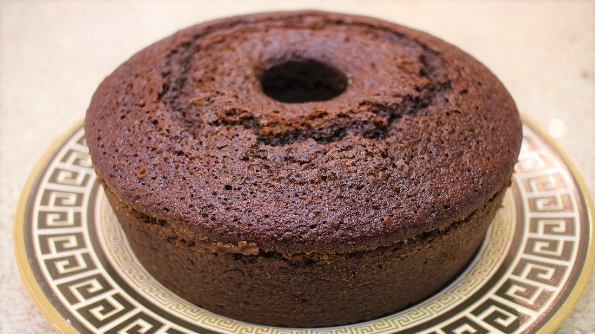

Arroz de Couve-Flor

- Arroz
- Couve-Flor
- Cebola Média
- Azeite
Deixe a couve-flor picada. Adicione os ingredientes e refogue bem. Adicione sal, tampe a panela e deixe cozinhar.
Bolo de Café
- Farinha de Trigo
- Açúcar
- Café Coado
- Chocolate em Pó
- Ovos
Bata o açúcar, as gemas e o café. Adicione farinha e chocolate e mexa bem. Bata as claras e junte à mistura.
Coxinha de Brigadeiro

- Leite Condensado
- Chocolate em Pó
- Manteiga
- Morango
- Chocolate Granulado
Junte o leite condensado, chocolate em pó e manteiga. Aqueça no fogo baixo. Envolva os morangos e passe no granulado.